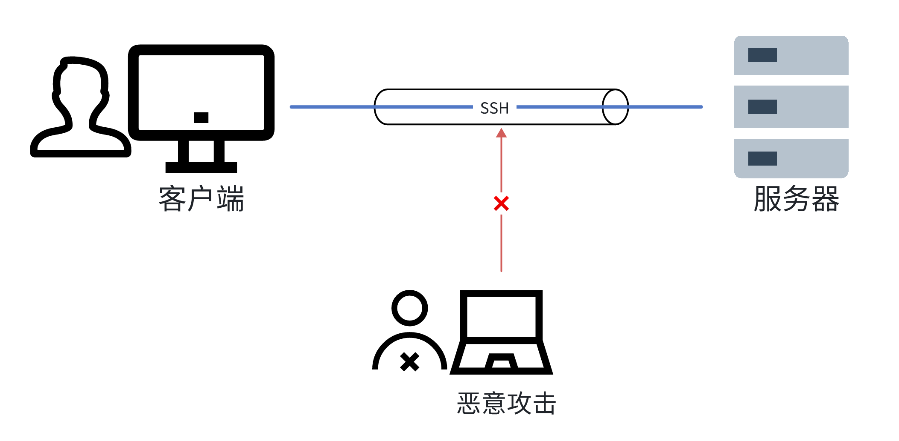

SSH应用与实践
SSH使用笔记
一、背景
Linux系统大多数情况下作为服务器而存在，服务的部署绕不开对Linux的操作，通过整理SSH知识点与实践笔记，可以完成对Linux系统的连接、实现跳板机、端口转发等目标。
二、安全远程登录
1. 密码登录
SSH服务默认登录方式，原理如下：
- 客户端向服务端发起请求
- 服务端收到请求将自己生成的公钥返回给客户端
- 客户端使用返回的公钥加密登录密码并发送给服务端
- 服务端使用对应的私钥解密，密码验证通过后，允许登录
基本使用：
ssh username@remoteIP -p port
username@remoteIP's password:
- username : 远程机器的用户名
- remoteIP : 远程机器的地址（IP、域名 或者 别名）
- port : SSH服务端口号（默认值：22）
- password : 输入远程机器的密码
存在的问题
- 安全性，存在中间人攻击的可能
- 客户端向服务端发起请求
- 攻击人截获请求，并向客户端反回自己的公钥
- 客户端使用返回的公钥加密登录密码并返回
- 攻击人用自己的私钥解密，获得服务器登录信息（密码）
- 较为麻烦，每次登录需要输入密码
2. 密钥认证登录
免密登录方式，原理如下：
- 客户端生成密钥对，事先将公钥上传存储至远程服务器上
- 客户端发起登录请求
- 服务器发一串随机字符串给客户端
- 客户端使用私钥加密随机字符串并返回给服务端
- 服务端用事先存好的公钥解密，确认字符串后，允许登录
实现步骤
-
客户端通过ssh-keygen生成自己的公钥和私钥。
- 生成一个4096位 RSA 加密算法的密钥对，并且给出了用户名和主机名。
ssh-keygen -t rsa -b 4096 -C "your_email@domain.com"
- 生成一个4096位 RSA 加密算法的密钥对，并且给出了用户名和主机名。
-
上传公钥
- 手动：
生成密钥以后，公钥必须上传到服务器，才能使用公钥登录。
OpenSSH 规定，用户公钥保存在服务器的~/.ssh/authorized_keys文件.注意，authorized_keys文件的权限要设为644，即只有文件所有者才能写。如果权限设置不对，SSH 服务器可能会拒绝读取该文件。cat ~/.ssh/id_rsa.pub | ssh user@host "mkdir -p ~/.ssh && cat >> ~/.ssh/authorized_keys" - 自动：
OpenSSH 自带一个ssh-copy-id命令，可以自动将公钥拷贝到远程服务器的.ssh-copy-id -i id_rsa username@remoteIP
- 手动：
-
登陆时，不指定私钥配置
vim ~/.ssh/config Host * IdentityFile ~/.ssh/your_private_key -
关闭密码登录
对于 OpenSSH，具体方法就是打开服务器 sshd 的配置文件/etc/ssh/sshd_config，将PasswordAuthentication这一项设为no。 重启sshdsystemctl restart sshd.service 自启动配置： systemctl enable sshd.service
三、文件传输
1. scp
-
复制远程文件至当前目录
scp username@remoteIP:/home/username/filename . -
复制文件至远程目录
scp filename username@remoteIP:/home/username -
基于
-r选项复制目录
scp -r source_dir username@remoteIP:/home/username/target_dir -
配置项
- -C ：传输时压缩文件
- & ： 后台运行
2. rsync
rsync不是SSH 工具集的一部分，是一个强大的文件同步工具，用于在本地或远程系统之间同步文件和目录，它能够差异化地传输文件，只传输发生变化的部分，从而节省带宽和时间。
-
本地文件同步到远程主机
rsync -av source/ username@remoteIP:destination -
远程文件同步到本地
rsync -av username@remoteIP:source/ destination
3. sftp
-
连接 FTP 主机
sftp username@remoteIP -
本地文件传输到远程主机
put localfile [remotefile] -
远程文件传输到本地
get remotefile [localfile]
4. sshfs
-
挂载远程文件系统
sshfs username@remoteIP:[远程路径] [本地挂载点] -
卸载远程文件系统
fusermount -u [本地挂载点]
四、端口转发
1. 本地转发（LocalForward）
创建一个本地端口，将发往该端口的所有通信都通过 SSH 服务器，转发到指定的远程服务器的端口。SSH 服务器只是一个作为跳板的中介，用于连接本地计算机无法直接连接的远程服务器。本地转发是在本地计算机建立的转发规则。
ssh -L -N -f -g local-port:target-host:target-port username@sshIP
-L：表示本地端口转发
-N：不发送任何命令，只用来建立连接
-f：将 SSH 连接放到后台
-g：允许远程主机通过使用本地主机的IP地址访问
-
举例：
ssh -L -N -f -g 8080:localhost:80 root@192.168.2.30
此时访问127.0.0.1:8080 等于访问的是192.168.2.30:80 -
如果经常使用本地转发，可以将设置写入 SSH 客户端的用户个人配置文件（~/.ssh/config）
Host myserver HostName 192.168.2.30 User root LocalForward 8080 localhost:80连接：
ssh myserver
2. 远程转发 (RemoteForward)
远程转发是通过远程 SSH 服务器访问本地计算机，可以作为内网穿透，当内网服务想被外网访问，可以通过远程转发将内网端口映射到具有公网IP的服务器的某个端口。
ssh -R -N remote-port:target-host:target-port remotehost
-R：表示远程端口转发
-N：不发送任何命令，只用来建立连接
- 举例
ssh -R 80:localhost:8080 -N root@www.emath.top此时访问www.emath.top:80 等于访问的是localhost:80
3. 动态转发 (DynamicForward)
动态转发需要把本地端口绑定到 SSH 服务器。至于 SSH 服务器要去访问哪一个网站，完全是动态的，取决于原始通信。
ssh -D local-port username@remoteIP -N
-D：表示动态转发
-N：表示这个 SSH 连接只进行端口转发，不登录远程 Shell
-
举例
ssh -D 1234 root@www.emath.top -N注意，这种转发采用了 SOCKS5 协议。访问外部网站时，需要把 HTTP 请求转成 SOCKS5 协议，才能把本地端口的请求转发出去。访问：
curl -x socks5://localhost:1234 http://www.google.com
五、总结
1. 什么是SSH
SSH（Secure Shell ）是一种网络安全协议，通过加密和认证机制实现安全的访问和文件传输等业务。传统远程登录和文件传输方式，例如Telnet、FTP，使用明文传输数据，存在很多的安全隐患。随着人们对网络安全的重视，这些方式已经慢慢不被接受。SSH协议通过对网络数据进行加密和验证，在不安全的网络环境中提供了安全的网络服务。作为Telnet和其他不安全远程shell协议的安全替代方案，目前SSH协议已经被全世界广泛使用，大多数设备都支持SSH功能。
2. SSH用来做什么
用于保证远程登录和远程通信的安全，任何网络服务都可以用这个协议来加密，最常用的场景是远程登录和文件传输。 
3. SSH 架构
SSH 的软件架构是服务器-客户端模式（Server - Client）。在这个架构中，SSH 软件分成两个部分：向服务器发出请求的部分，称为客户端（client），OpenSSH 的实现为 ssh；接收客户端发出的请求的部分，称为服务器（server），OpenSSH 的实现为 sshd
4. 工作流程
- 建立TCP连接
- 版本协商
- 算法协商
- 密钥交换
- 用户认证
- 会话请求
- 会话交互
5. 感悟
明天开始就是2024了，回忆这一年以来不论是生活还是工作确实都很难，希望自己能不忘初心，持续提升自我，肩负起家庭的责任、当代青年的社会责任。
在未来的一年，学习笔记还是要坚持做的，加深自己对工作中常用的知识点的理解更是方便需要时的查阅。